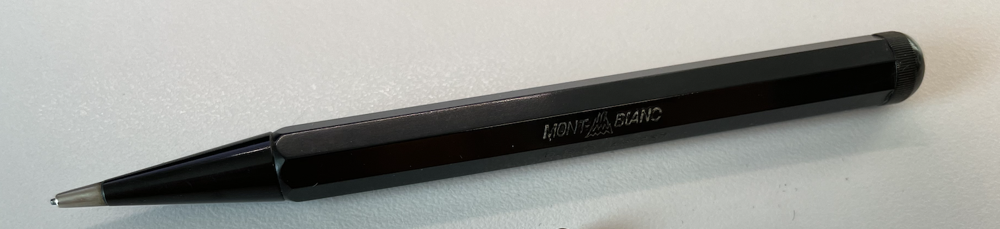
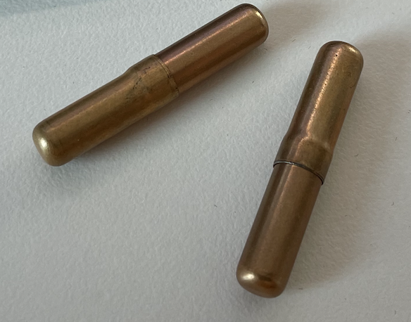

Vintage Mechanical Pencil
몽블랑 빈티지 펜슬
Simplo 10K ebonite 펜슬은 몽블랑이 아직 ‘럭셔리 브랜드’가 아니라 정밀한 필기 도구 제조사 Simplo Filler Pen Co. 였던 시기의 산물로, 흑색 에보나이트 바디의 기계식 펜슬이다. 에보나이트 특유의 무광 흑색과 각진 단면은 굴림을 방지하는 실사용적 설계를 드러내며, 회전식 메커니즘과 당시 표준이던 비교적 굵은 심 규격은 필기·스케치·사무용 도구로서의 성격을 분명히 한다. 화려한 장식이나 캡 탑의 상징 대신 측면 각인과 재료의 절제된 조합을 택한 이 펜슬은, 몽블랑이 ‘상징을 소유하는 브랜드’가 되기 이전에 ‘매일 쓰는 신뢰할 만한 도구’를 만들던 가치관을 응축해 보여주는 전환기적 제품이다.

여기에 들어가는 심은 특수한 규격이다. 1.18mm 빈티지 심이 들어가고, 또 길이도 매우 짧다.
여기에 맞는 파버 카스텔의 심을 구했는데, 귀여운 통에 들었다.

빈티지 심
1.18 mm 선심은 원래 영국·미국 등에서 기계식 샤프펜슬(클러치펜슬, 프로펠링펜슬) 이 처음 널리 보급되던 시기부터 사용된 초기 표준 리드 직경이다. 이 크기는 당시 영국과 미국 제조사들이 채택한 .046인치(약 1.168 mm) 를 기준으로 한 것으로, 이후 여러 제조사에서 1.1 mm, 1.15 mm, 1.2 mm 등의 표기와 혼용되었다.
빈티지 심 규격을 계산하는 함수
function inchToMm(inch) {
return inch * 25.4;
}
function mmToInch(mm) {
return mm / 25.4;
}
References
- Vintage Pencil Mania
- Mechanical Pencil Wikipedia
- https://www.silvermakersmarks.co.uk/Dates/index.html - 영국 은제품 홀마크확인